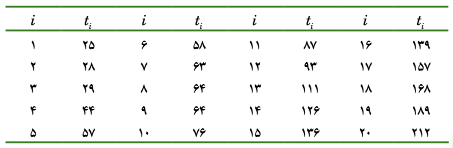

روش عددی مثال ۶.۱
اگر بخواهیم دو پارامتر توزیع وایبل را برآورد کنیم از این فرمول گشتاوری می توانیم استفاده کنیم:
\[\frac{\gamma(1 + \frac{2}{\beta})}{\gamma^2(1 + \frac{1}{\beta})} = \frac{m_2}{m^2_1}\]
بعد کسر سمت راست را به سمت چپ می بریم:
\[\frac{\gamma(1 + \frac{2}{\beta})}{\gamma^2(1 + \frac{1}{\beta})} - \frac{m_2}{m^2_1} = 0\]
داده هایی که داریم به این صورت هستند:
<- c (1 : 25 )<- c (391 ,510 ,541 ,595 ,622 ,626 ,680 ,694 ,710 ,715 ,746 ,763 ,775 ,932 ,957 ,984 ,1003 ,1019 ,1031 ,1083 ,1223 ,1279 ,1285 ,1393 ,1577 )<- cbind (i,t)
[1] 391 510 541 595 622 626 680 694 710 715 746 763 775 932 957
[16] 984 1003 1019 1031 1083 1223 1279 1285 1393 1577
حالا تابع را در R تعریف می کنیم:
<- mean (t2)<- mean (t2^ 2 )<- function (beta, m1, m2){gamma (1 + 2 / beta) / gamma (1 + 1 / beta)^ 2 - m2/ m1^ 2
<- uniroot (f2,interval = c (0.1 ,40 ),m1 = m1,m2 = m2)<- op$ root
از تابع uniroot استفاده کردیم تا beta را بدست بیاوریم
که می شود: \[\beta = 3.298232\]
حالا
\[\hat{\lambda}\]
را نیز پیدا می کنیم:
<- (gamma (1 + 1 / beta)) / m1
حالا چون
\[\beta = 3.298232\]
\[\lambda = 0.001013137\]
را پیدا کردیم میتوانیم توزیع این داده ها بدست بیاوریم
با در نظر گرفتن داده هایی که داریم ، تابع وایبل روی این داده با تغییر پارامتر در زیر قابل مشاهده است:
= [391 , 510 , 541 , 595 , 622 , 626 , 680 , 694 , 710 , 715 , 746 , 763 , 775 , 932 , 957 , 984 , 1003 , 1019 , 1031 , 1083 , 1223 , 1279 , 1285 , 1393 , 1577 ]// --- MLE fitting — returns shape k and rate λ = 1/η --- function fitWeibullMLE (d) {const n = d. length let k = 1.5 for (let iter = 0 ; iter < 300 ; iter++ ) {const xk = d. map (x => Math . pow (x, k))const lnx = d. map (x => Math . log (x))const S0 = xk. reduce ((a, b) => a + b, 0 ) / nconst S1 = d. map ((_, i) => xk[i] * lnx[i]). reduce ((a, b) => a + b, 0 ) / nconst S2 = d. map ((_, i) => xk[i] * lnx[i] * lnx[i]). reduce ((a, b) => a + b, 0 ) / nconst meanLnx = lnx. reduce ((a, b) => a + b, 0 ) / nconst num = 1 / k + meanLnx - S1 / S0const den = - 1 / (k * k) - (S2 * S0 - S1 * S1) / (S0 * S0)= Math . max (0.1 , k - (num / den) * 0.5 )const eta = Math . pow (d. map (x => Math . pow (x, k)). reduce ((a, b) => a + b, 0 ) / d. length , 1 / k)return { shape : k, rate : 1 / eta }= fitWeibullMLE (data)// Fixed parameters = 3.25 = 0.001 // λ; scale η = 1/λ = 1000 // --- Gamma function (Lanczos) --- function gammaFn (z) {const g = 7 const c = [0.99999999999980993 , 676.5203681218851 ,- 1259.1392167224028 , 771.32342877765313 ,- 176.61502916214059 , 12.507343278686905 , - 0.13857109526572012 , 9.9843695780195716e-6 , 1.5056327351493116e-7 ]if (z < 0.5 ) return Math . PI / (Math . sin (Math . PI * z) * gammaFn (1 - z))-- let x = c[0 ]for (let i = 1 ; i < g + 2 ; i++ ) x += c[i] / (z + i)const t = z + g + 0.5 return Math . sqrt (2 * Math . PI ) * Math . pow (t, z + 0.5 ) * Math . exp (- t) * x// --- Weibull functions (β, λ) where η = 1/λ --- = (x, b, lam) => { const eta = 1 / lam; return x<= 0 ? 0 : (b/ eta)* Math . pow (x/ eta, b- 1 )* Math . exp (- Math . pow (x/ eta, b)) }= (x, b, lam) => { const eta = 1 / lam; return x<= 0 ? 0 : 1 - Math . exp (- Math . pow (x/ eta, b)) }= (x, b, lam) => { const eta = 1 / lam; return x<= 0 ? 0 : (b/ eta)* Math . pow (x/ eta, b- 1 ) }= (b, lam) => (1 / lam) * gammaFn (1 + 1 / b)= (b, lam) => (1 / lam) * Math . pow (Math . LN2 , 1 / b)= (b, lam) => { const eta= 1 / lam; return Math . sqrt (eta* eta* (gammaFn (1 + 2 / b)- Math . pow (gammaFn (1 + 1 / b), 2 ))) }= (b, lam) => (1 / lam) * Math . pow (- Math . log (0.9 ), 1 / b)//| echo: false // Controls = Inputs. range ([0.5 , 5 ], {value : fixedShape, step : 0.01 , label : "Shape β" = Inputs. range ([0.0002 , 0.005 ], {value : fixedRate, step : 0.00001 , label : "Rate λ" = Inputs. radio (["PDF" , "CDF" , "Probability plot" , "Hazard rate" ], {value : "PDF" , label : "Chart" html `<p style="font-size:13px;color:#666;margin:2px 0 12px"> Scale η = 1/λ = <strong> ${ (1 / rate). toFixed (1 )} </strong> </p>` const sorted = [... data]. sort ((a, b) => a - b)const n = sorted. length const eta = 1 / rateconst xmin = Math . min (... data) * 0.85 const xmax = Math . max (... data) * 1.1 const pts = 300 const xs = Array . from ({ length : pts }, (_, i) => xmin + (xmax - xmin) * i / (pts - 1 ))if (plotType === "PDF" ) {const bins = 12 const w = (xmax - xmin) / binsconst counts = Array (bins). fill (0 ). forEach (v => {let b = Math . floor ((v - xmin) / w)if (b >= bins) b = bins - 1 if (b >= 0 ) counts[b]++ const histData = counts. map ((c, i) => ({x0 : xmin + i * w, x1 : xmin + (i + 1 ) * w, density : c / (n * w)const lineData = xs. map (x => ({ x, y : weibullPDF (x, shape, rate) }))return Plot. plot ({width : 680 , height : 300 , x : { label : "Time" }, y : { label : "Density" }, marks : [. rectY (histData, { x1 : "x0" , x2 : "x1" , y : "density" , fill : "#378ADD" , fillOpacity : 0.25 , stroke : "#378ADD" , strokeOpacity : 0.5 }), . line (lineData, { x : "x" , y : "y" , stroke : "#378ADD" , strokeWidth : 2 }), . ruleY ([0 ])if (plotType === "CDF" ) {const empData = sorted. map ((x, i) => ({ x, y : (i + 0.3 ) / (n + 0.4 ) }))const lineData = xs. map (x => ({ x, y : weibullCDF (x, shape, rate) }))return Plot. plot ({width : 680 , height : 300 , x : { label : "Time" }, y : { label : "F(t)" , domain : [0 , 1 ] }, marks : [. line (lineData, { x : "x" , y : "y" , stroke : "#378ADD" , strokeWidth : 2 }), . dot (empData, { x : "x" , y : "y" , fill : "#378ADD" , fillOpacity : 0.5 , r : 5 }), . ruleY ([0 ])if (plotType === "Probability plot" ) {const empY = sorted. map ((_, i) => (i + 0.3 ) / (n + 0.4 ))const pointData = sorted. map ((x, i) => ({lnx : Math . log (x), lnln : Math . log (- Math . log (1 - empY[i]))const fitXs = xs. filter (x => x > 0 )const lineData = fitXs. map (x => ({lnx : Math . log (x), lnln : shape * (Math . log (x) - Math . log (eta))return Plot. plot ({width : 680 , height : 300 , x : { label : "ln(t)" }, y : { label : "ln(−ln(1−F))" }, marks : [. line (lineData, { x : "lnx" , y : "lnln" , stroke : "#378ADD" , strokeWidth : 2 }), . dot (pointData, { x : "lnx" , y : "lnln" , fill : "#378ADD" , fillOpacity : 0.5 , r : 5 })if (plotType === "Hazard rate" ) {const lineData = xs. map (x => ({ x, y : weibullHaz (x, shape, rate) }))return Plot. plot ({width : 680 , height : 300 , x : { label : "Time" }, y : { label : "h(t)" }, marks : [. line (lineData, { x : "x" , y : "y" , stroke : "#D85A30" , strokeWidth : 2 }), . ruleY ([0 ])html `<details style="margin-top:16px;font-size:13px;color:#555"> <summary style="cursor:pointer;font-weight:500">Parameter reference</summary> <table style="margin-top:8px;border-collapse:collapse;width:100%;font-size:13px"> <tr style="border-bottom:1px solid #ddd"> <th style="text-align:left;padding:4px 8px"></th> <th style="padding:4px 8px">β (shape)</th> <th style="padding:4px 8px">λ (rate)</th> </tr> <tr> <td style="padding:4px 8px;color:#666">Fixed</td> <td style="padding:4px 8px;text-align:center"><strong> ${ fixedShape} </strong></td> <td style="padding:4px 8px;text-align:center"><strong> ${ fixedRate} </strong></td> </tr> <tr style="background:#f9f9f9"> <td style="padding:4px 8px;color:#666">MLE fit</td> <td style="padding:4px 8px;text-align:center"> ${ mleFit. shape . toFixed (4 )} </td> <td style="padding:4px 8px;text-align:center"> ${ mleFit. rate . toFixed (6 )} </td> </tr> <tr> <td style="padding:4px 8px;color:#666">Current</td> <td style="padding:4px 8px;text-align:center"> ${ shape. toFixed (4 )} </td> <td style="padding:4px 8px;text-align:center"> ${ rate. toFixed (6 )} </td> </tr> </table> <p style="margin:8px 0 0"> ${ shape > 1 ? "β > 1 → increasing failure rate (wear-out)" : < 1 ? "β < 1 → decreasing failure rate (infant mortality)" : "β ≈ 1 → constant failure rate (random failures)" } </p> </details>`
۶.۶ حل روش عددی مثال
اول از همه ما یک سری داده داریم که در جدول زیر مشخص شده است.

<- cbind (c (1 : 20 ), c (25 ,28 ,29 ,44 ,57 ,58 ,63 ,64 ,64 , 76 ,87 ,93 ,111 ,126 ,136 ,139 ,157 ,168 ,189 ,212 ))
[,1] [,2]
[1,] 1 25
[2,] 2 28
[3,] 3 29
[4,] 4 44
[5,] 5 57
[6,] 6 58
[7,] 7 63
[8,] 8 64
[9,] 9 64
[10,] 10 76
[11,] 11 87
[12,] 12 93
[13,] 13 111
[14,] 14 126
[15,] 15 136
[16,] 16 139
[17,] 17 157
[18,] 18 168
[19,] 19 189
[20,] 20 212
[1] 25 28 29 44 57 58 63 64 64 76 87 93 111 126 136 139 157 168 189
[20] 212
فرمول وایبل نیز به این صورت است: \[f(t,\lambda, \beta) = \beta\lambda^{\beta}t^{\beta-1}e^{-(\lambda t)^\beta}\]
که likelihood آن هم به این شکل می شود
\[l(\lambda , \beta) = \sum_{i=1}^{n} [ln(\beta) + \beta ln(\lambda) + (\beta - 1) ln(t_i) - (\lambda t_i)^\beta]\]
که حالا اگر sum را روی آنها تاثیر بدهیم به این شکل می شود \[l(\lambda , \beta) = [nln(\beta) + n\beta ln(\lambda) + (\beta - 1) \sum_{i=1}^{n} ln(t_i) - \sum_{i=1}^{n}(\lambda t_i)^\beta]\]
در کتاب آورده شده است که میتوان مستقیما این فرمول را ماکزیمم کرد یا از مشتق آن به صورت تکرار اعداد را بدست آورد.
ما به صورت مستقیم از تابع likelihood استفاده میکنیم به این شکل که :
تابعی که میخواهیم آن را ماکزیمم کنیم را در R می نویسیم
تابع را در دستور optim() قرار می دهیم
تابع بالا در R به صورت زیر قابل تعریف شدن است:
<- function (params, y){<- params[1 ]<- params[2 ]<- length (y)* log (beta) + n* beta* log (lambda) + (beta - 1 )* sum (log (y)) - sum ((lambda * y)^ beta)
بعد از تعریف تابع باید این تابع را به روش های عددی ماکزیمم کنیم:
<- c (1 ,1 )<- optim (initialval, f,y = y,control = list (fnscale = - 1 ),method = "BFGS" ,hessian = TRUE )
$par
[1] 0.009184599 1.878197671
$value
[1] -106.5273
$counts
function gradient
118 23
$convergence
[1] 0
$message
NULL
$hessian
[,1] [,2]
[1,] -848011.5291 -947.21582
[2,] -947.2158 -10.22236
اول از همه یک نقطه شروع برای پارامتر ها در نظر می گیریم که در initialvalue آنها را قرار می دهیم که برای هر دو پارامتر 1, 1 در نظر گرفته شد
تابع optim() را فراخوانی می کنیم و اول از همه مقادیر اولیه را در آن قرار می دهیم.
بعد از آن تابع f که میخواهیم بهینه سازی کنیم را در تابع قرار می دهیم
بعد از آن داده هایی که از مسئله داشتیم را درون تابع optim() جایگذاری میکنیم
تابع optim به صورت default تابعی که داریم را مینیمم می کند با دستوری که قرار دادیم control = list(fnscale = -1) ، تابعی که در optim() قرار می دهیم خروجی ماکزیمم خواهد بود.
method و hessian هم به روشی که برای بدست آورد جواب نیاز داریم اشاره می کند.
یا اگر طبق فرمول 6.12 پیش برویم که برابر است با :
\[\lambda = [\frac{1}{n} \sum_{i=1}^{n} t_i^{\beta}]^{-\frac{1}{\beta}}\]
<- function (y,betaP){<- length (y)<- ( (1 / n) * sum (y^ betaP) )^ (- 1 / betaP)
که با فرمول خود کتاب هم که محاسبه شد عددی نزدیک به عددی که برآورد شد یعنی 0.009184599 به دست آمد که یعنی برآورد ما طبق کتاب نیز درست است.
د
{kind=link}
{kind=link}